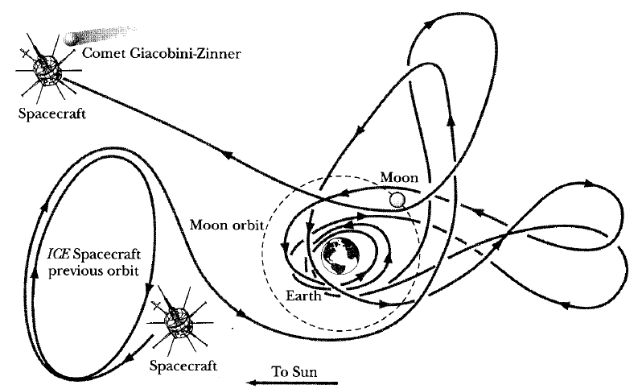

1. ISEE-3/ICE 미션의 전설적인 궤도

이 그림은 우주 항해 역사에서 가장 정교한 '중력 도움' 기법을 보여주는 전설적인 다이어그램입니다. 연료가 거의 바닥난 탐사선이 달의 중력만을 이용해 수차례 궤도를 꼬아가며, 결국 인류 최초로 혜성을 직접 탐사하는 데 성공했습니다. 복잡한 고리들은 연료 대신 지혜를 사용한 결과입니다.
2. 대화형 스윙바이(Gravity Assist) 물리 실험실
위 다이어그램의 복잡한 궤도를 가능하게 만든 핵심 물리학 원리인 '스윙바이'를 실험해 보세요. 행성(또는 달)이 공전하는 방향 뒤쪽으로 우주선이 회전하며, 엔진 없이도 어떻게 가속되는지 눈으로 확인해 보세요.
※ 붉은색 점이 우주선이며, 왼쪽 상단의 수치가 실시간 속력을 나타냅니다.
3. 수업 내용 요약: 중력, 구심력, 그리고 에너지 훔치기
| 핵심 물리학 개념 | 스윙바이에서의 역할 | 다이어그램/시뮬레이션 적용 |
|---|---|---|
| **중력 (만유인력)** | 행성(달)이 우주선을 끌어당기는 힘의 원천. 우주 항해의 '보이지 않는 밧줄'. | 시뮬레이션에서 붉은 우주선이 푸른 행성에 가까워질수록 휘어지는 힘. |
| **구심력** | 중력이 구심력 역할을 하여 우주선을 곡선 궤도로 돌게 만듦. | 다이어그램의 복잡한 루프 및 시뮬레이션의 회전 구간. |
| **에너지 보존 & 스윙바이** | *행성 기준*: 속력 변화 없음. *태양(지구) 기준*: 움직이는 행성의 운동량을 훔쳐와 전체 에너지 증가. | 시뮬레이션에서 행성 뒤로 돌아 나온 우주선의 최종 속력이 빨라짐 (훔친 에너지). |